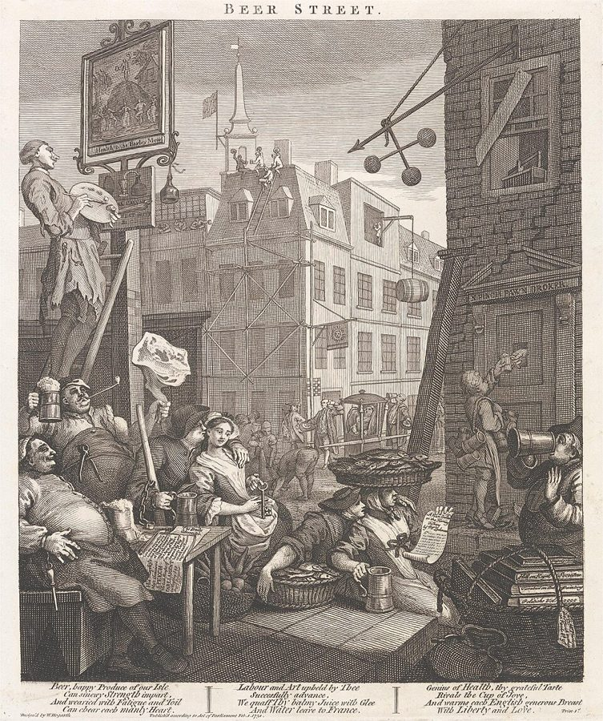
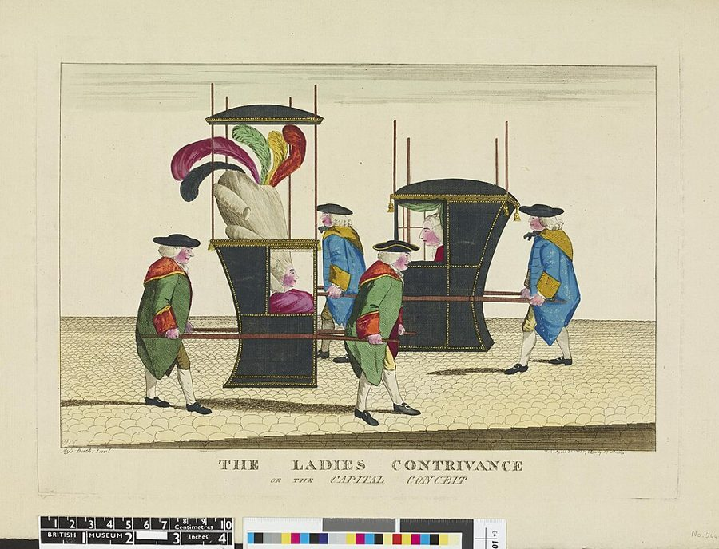
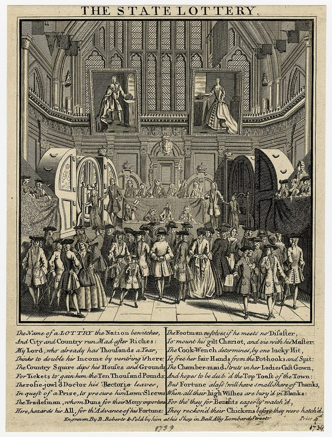
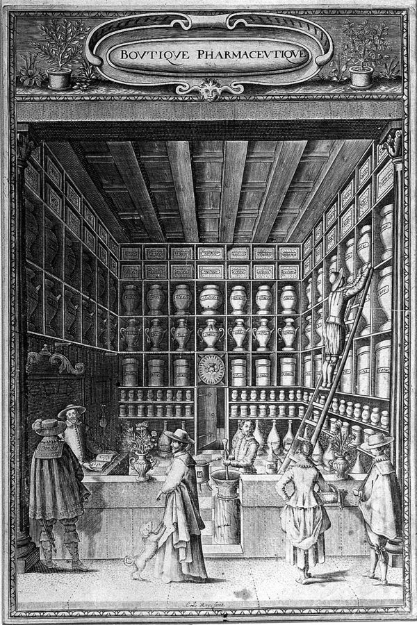

这一页在做什么
为什么挖煤的比打铁的挣得多，刽子手比裁缝挣得多，学法律的却多半挣不回学费？上一页问一国的工资水平，这一页问同一个城里行与行之间的差别。斯密想用一条简单的规矩解释这些差别：人会往划算的行当里挤。读的时候抓两条线：哪些工资差别是在补偿钱以外的东西；人为什么一再涌进明明不划算的行当。

读之前：这一页在全书的哪里
上一页（第 8 章）问一国的工资水平由什么决定，第 9 章（页 06）讲利润。这一页换个问法：同一个地方，不同的行当为什么挣得不一样。第 10 章分两部分，这一页是第一部分，讲职业本身的性质；第二部分讲欧洲的政策（行会、学徒法、定居法）怎样把差别弄得更大，在页 08。第 5 段说体面的职业报酬不足，「后面再说明」，指的就是第 25 段的律师；第 9 段那台「昂贵的机器」，卷二第 1 章（页 10）还会再出现。
同一个城里，为什么有的行当挣得多、有的挣得少？这些差别是不公平，还是在补偿别的东西？
第 1 段说各行的利弊「必然」拉平，前提是人人能自由择业改行。今天最脏最累的活常常工资最低。别把这一章读成「市场给的工资都公道」，见「本站怎么看」。
读的时候带着这几个问题。不用先找答案，读完回来对照「检查一下理解」。
- 斯密说「必然」拉平的是什么？紧跟在后面的条件是什么？§1
- 泥瓦匠的手艺最好学，为什么比很多手艺人挣得多？他说的是日工资还是全年的收入？§3
- 律师、士兵、水手这些行当，从钱上看明明吃亏，为什么还挤满了人？§4§5
- 药剂师的「暴利」里，哪一部分其实是工资？§6
这一页的路线
斯密先立一条规矩，再一条条拆开来补。第 1 段说：只要人能自由进出，各行的全部利弊必然拉平；第 2 段马上承认，欧洲各行的货币工资明明差得很远，于是给出两类原因，这一页讲第一类：职业本身的五种情况。接下来是清单的写法：每一种情况先讲工资，举几个行当作证，再用一两段问它影不影响资本利润，答案多半是不影响。读到第五种（成功的机会）会觉得突然展开了：斯密从律师的彩票一路讲到人性，彩票、保险、当兵、出海、走私，这是全页最好看的一段。然后收拢：五种情况只有两种碰得到利润，所以利润比工资平，药剂师的暴利其实是工资。最后补上拉平还需要的三个条件，这一节标「有空」，可以跳着读。
斯密落在哪：货币工资差得远，并不推翻「利弊会拉平」：脏、累、难学、没准的行当，要多给钱才招得到人；可人人高估自己的运气，所以靠运气出头的行当反倒挣得少。资本利润只受其中两种情况影响，比工资平得多。
分节地图
这一页是卷一第 10 章的第一部分，本站切成 7 节。粗体是本站起的节名；「杨译里找」后面是杨敬年译本里这一节开头附近的小标题或第一句，在电子书里搜它就能跳过去；灰色的英文是原文这一节开头的几个词。标「先读」的是最短读法，读完打个勾。
- 利弊会拉平：刽子手挣得多在有完全自由的地方，有利和不利趋于平等THE whole of the advantages and …全章的总规矩在第 1 段，限定条件紧跟在后面，别漏读。第 5 段的刽子手、第 6 段的穷渔夫，是耻辱和乐趣各自的例子。
- 人是一台昂贵的机器（2）工资随学习业务的成本而变动Secondly, The wages of labour vary …第 9 段「昂贵的机器」是人力资本的源头。第 11 段算学徒的花费，顺带说欧洲的政策把农活错当成了不要技能的活。
- 泥瓦匠的冬天，金匠的信用（3）工资随职业的固定与否而变动Thirdly, The wages of labour in …两种情况：活稳不稳（第 14–19 段），要不要被人托付（第 20–23 段）。第 18 段伦敦运煤工的工资最惊人。
- 法律这张彩票（5）工资随成功的可能与否而不同Fifthly, The wages of labour in …律师也许要到快四十岁才开张，律师会馆的总账入不敷出；第 28 段演员被人看不起，却拿高价。
- 人人都觉得自己会中奖大多数人对自己的才能过于自负The over-weening conceit which the greater …全页的高潮：人普遍高估自己的运气。彩票、保险、当兵、出海一个个讲，第 36 段走私是「必然」的破产之路。
- 药剂师的利润其实是工资利润不如工资那样不平等，利润的不平等常常只是由于把工资包括在内Of the five circumstances, therefore, which …第 38 段药剂师、第 39 段小港口杂货商，账算得很好看；第 40–41 段转到城乡零售和投机商人，可略读。
- 兼职的人干活便宜这样，五种情况使不同的货币利得彼此抵消The five circumstances above mentioned, though …拉平还要三个条件：行当老、时期正常、是主业。数字都过时了；第 51–55 段讲兼业的人干活便宜，正是今天副业和零工的道理。
先用中文过一遍：这一页的概念
先把这一页用到、斯密默认你懂的几个概念讲一遍。讲的是概念本身，斯密拿它推出什么，读原书时自己看。每个概念都有一句「今天」：今天的经济学怎么叫它、怎么看它。
§1全部利弊 the whole of the advantages and disadvantages
挑工作时，人比的不只是工资。一份工作好不好，要把钱和钱以外的东西放在一起算：累不累、脏不脏、体面不体面、稳不稳、要花多少钱学、有多大指望出头。斯密说，在同一个地方，各行的这本总账「必然」相等，或者不断往平里走：哪一行明显划算，人就涌进去，把好处摊薄；哪一行明显吃亏，人就跑掉，留下的人就能多拿。拉平的是总账，不是工资。所以工资差得远，不见得有人吃亏，可能是钱在补别的东西。斯密还加了一句要紧的话：这种补偿有时只在「人们的想象里」，算账的人未必算得准。杨译作译本：「有利和不利」。
今天：劳动经济学叫它工作的「净收益」或总体吸引力，是看工资差别的出发点。分歧在于拉不拉得平、要多久：搬家和转行有成本，好些人根本没得挑。
在这一页：第 1–2 段立论，第 42 段收束。前提是页 04 讲过的完全自由；第 43 段又补了三个条件。
§1补偿性工资差异 circumstances which make up for a small pecuniary gain
工资里多出来或少掉的那一截，是在补钱以外的东西。斯密数了五种情况：活本身愉快还是难受（辛苦、脏、险、丢人）；学起来容易还是又难又贵；活稳不稳；要不要被人托付重任；成功的机会大不大。前四种都是越难受、越难学、越没准、托付越重，工资越高；第五种却是反着来的，下文细说。打个比方：同样一个月，夜班要多给钱才有人值；给自己喜欢的球队做解说，少给钱也有人抢。
今天：就叫「补偿性工资差异」。Rosen 1986 年的综述把它当作劳动市场长期均衡的基本概念；危险岗位多给的工资，还被拿来给人命估价，见「对照今天」。
在这一页：第 4 段列出五种，第 5–35 段逐条讲工资，第 7、13、19、23、36 段讲利润。
§2人力资本 a man educated … may be compared to one of those expensive machines
花钱、花时间学来的本事，像一台买来的机器。买机器的人指望它在用坏以前，把本钱连同普通的利润挣回来；学手艺、读书的人也一样：学成以后比普通劳工多挣的那一截，要还上全部学费，外加这笔钱放在别处能挣的利润，而且得在说不准长短的一辈子里还清。学徒几年不拿工钱、要家里养活、还常常得给师傅交钱，这些都是学费。斯密拿这个道理解释手艺人为什么比农工挣得多一点，画家、律师、医生为什么挣得多得多。
今天：就叫「人力资本」。1960 年代 Schultz、Becker 等人把它做成一整套理论，今天算教育回报率就从这里出发。斯密只打了个比方，没用这个名词。
在这一页：第 9–12 段。卷二第 1 章第 17 段（页 10）又把学来的本事算作社会的固定资本。
§5过度自信 over-weening conceit; absurd presumption in their own good fortune
人普遍高看自己：本事估高了，运气估得更高。斯密说前一样哲学家早就讲过，后一样少有人提，其实更普遍，只要身体还好、心气还在，谁都免不了。他的说法分两半：赢的机会，人人都多少估高了；输的机会，多数人估低了，几乎没人估高。这接上了第 2 段那句：补偿有时只在「人们的想象里」。年轻人挑职业时最自信，所以律师、诗人、军人、水手这些靠运气出头的行当总是挤满了人，算下来钱上反倒吃亏。
今天：行为经济学叫「过度自信」「乐观偏差」，有大量实验和实地证据。但人对小概率的损失也常常估高，那一半斯密说过了头，见「对照今天」。
在这一页：第 26 段提出，第 29–35 段拿彩票、保险、当兵、出海作证，第 36 段用到走私上。
故事和背景
这一页里的人、事和 18 世纪的东西，按在书里出现的顺序排，标题前是节号。
§1刽子手、屠夫和客栈老板
第 5 段排了一串：裁缝帮工比织工挣得少，活轻；织工比铁匠挣得少，活干净；铁匠虽是有手艺的工匠，干 12 个小时，挣的很少赶得上挖煤工干 8 个小时，因为挖煤更脏、更险，还在地底下干。接着是耻辱：屠夫的营生又残忍又招人嫌，却比大多数普通行当赚钱；最招人恨的公共刽子手，按干的活算，报酬比任何普通行当都高。第 7 段说资本也一样：客栈和酒馆老板从来做不了自家房子的主，哪个醉汉都能冲他撒野，所以小本钱赚得特别多。反过来，打猎打鱼当年是人类的头等营生，到了文明社会成了消遣，靠它吃饭的人就都很穷。斯密说渔夫从忒奥克里托斯那时起就穷；Cannan 注说，那首古希腊诗只是写了两个穷渔夫的日子。
§3泥瓦匠的冬天，运煤工的码头

第 15 段：泥瓦匠和砖匠遇上严霜、坏天气就干不了活，平时也得等顾客上门来叫，常常闲着。所以干活那些天挣的，要养活闲着的日子，还要补偿想到前途没准时那些「焦虑沮丧的时刻」。他们的工资是普通劳工的一倍半到两倍。可斯密说，没有哪种手艺比砌砖更好学：据说伦敦的轿夫夏天有时就去当砖匠。伦敦的裁缝帮工也一样，被雇主按天按周雇来辞去，夏天常常几个星期没活。最高的是在伦敦卸煤的运煤工：活和挖煤一样又脏又累，煤船又说不准哪天到，几年前有人调查过，他们一天能挣 6 到 10 先令。Cannan 注指出，这一条斯密在「日工资」和「全年收入」之间滑来滑去：开头说全年也该多挣，后面又像在说全年一样多。读时留意他指的是哪一种。
§4律师会馆：快四十岁才开张
第 25 段：送儿子去跟鞋匠当学徒，他准能学会做鞋；送他去学法律，至少是二十比一，他学不到能靠这行吃饭的地步。斯密把法律比作彩票：二十个人落空，那个中了的人，按理该把二十人的学费都挣回来；可一个出庭律师也许要到快四十岁，才开始靠这一行挣到点钱。他让你算一笔账：把所有律师会馆里的律师和学生一年挣的、一年花的各加起来，挣的只抵得上花的一小部分，哪怕挣的往高里算、花的往低里算。律师会馆（inns of court）是伦敦的四家法律学会，杨译加了注，说只有它们能授予出庭律师的资格。今天读博士、当演员、开公司的人，买的是同一种彩票。
§4演员：被人看不起，又拿高价
第 28 段说，有些才艺悦人又美，有它的人受人钦佩，可拿它来挣钱，却被看作「一种公开的卖淫」，斯密特意加了一句：不管这看法出于道理还是偏见。所以演员、歌剧歌手、歌剧舞蹈演员的报酬，既要付学艺的工夫，还要补名声上的损失：才艺稀罕而美，以此为生又不光彩，两条加起来，价钱就高得出奇。斯密预言：哪天舆论变了，涌进来的人一多，价钱很快就会下来。《国富论》出版不到三年，1779 年 1 月，当时最有名的演员 David Garrick 去世，葬进了威斯敏斯特教堂的诗人角，送葬的人群站满了街道。那时的风气，已经在变了。
§5国家彩票：原价不值，转手还要加价

第 30 段的「国家彩票」，是英国政府筹钱的办法：1694 年第一次发行，为对法国的战争筹款，此后一百三十多年里前后办了约一百七十次，最后一次在 1826 年开奖。斯密说，奖券本来不值认购时付的原价，可在市面上转手，常常还要加价两成、三成，有时四成：大家图的是那几个一两万镑的大奖。奖金最高不过 20 镑的彩票，哪怕公平得多，也没人这么抢。接着是那句像今天反赌博广告的话：买的票越多，越可能输；把所有的票都买下，你必输无疑。今天英国的国家彩票，每 1 英镑里约有 53 便士作为奖金发回给买彩票的人。
§5慈母不敢送儿子去港口上学
第 33–35 段把彩票的道理搬到穷人家的孩子身上。新的战争一开打，年轻人报名参军最踊跃，想象着一千个立功扬名的机会，其实几乎没有升迁的指望。斯密说：这些浪漫的念头，就是他们流血的全部价钱。士兵的饷比普通劳工还少，打起仗来却累得多。出海这张彩票没那么亏：大奖少，小奖多，普通水手比普通士兵更常混出点名堂。体面的劳工或手艺人家的儿子出海，常常得到父亲同意；去当兵，从来是瞒着父亲。下层人家的慈母常常不敢把儿子送到港口城镇上学，怕他看见船、听了水手讲的冒险故事，就要出海去。斯密的结论：能凭勇气和本事躲过的危险，非但吓不住年轻人，反而招人；只有勇气和本事都没用的危险，比如不卫生的行当，才真要多给钱。
§6药剂师的暴利，克卡尔迪的杂货商

「药剂师的利润」在当时是句俗话，意思是暴利。第 38 段替他们算账：一个生意最好的药剂师，一年卖掉的药，进价也许不过三四十镑，卖出三四百镑，利润率百分之一千。可他是穷人的医生，病不太重时也是富人的医生，他的手艺和担的责任，只能加在药价里收。这背后有段官司：1704 年英国上议院在 Rose 案里判药剂师可以给人看病，通常的说法是，只要不为出主意收钱。第 39 段的小港口杂货商，100 镑本钱赚四五成，同地的大批发商 1 万镑只赚百分之八到十；可杂货商要能读会写会算，还得懂五六十种货，一年三四十镑工钱不算多。Cannan 说，斯密心里想的无疑是克卡尔迪，他的家乡。
§7设得兰的毛袜，伦敦的分租房
第 51 段起讲兼业：一个人主要靠一份工作过活，闲下来时，愿意拿比这活本该给的更少的钱干另一份。苏格兰的佃农从主人那里得一间房、一块菜园、一头牛的草料，主人用人时每周再给两配克燕麦片；闲时谁给点钱都肯干。设得兰群岛每年运一千多双毛袜到利斯，一双 5 到 7 便士，而当地普通劳工一天就挣 10 便士。伦敦的例子最出人意料：斯密相信伦敦房租全欧洲最贵，可在他知道的首都里，带家具的出租房数这里最便宜。英格兰人租房得租整栋，店主在底层开店、一家睡阁楼，中间两层租出去贴补房租；他靠生意养家，不指望房客，所以肯租得便宜。今天的副业、零工、出租空房间，是同一个道理。
原典：斯密的原话
这本书是公版书，下面几段整段放斯密的原文，配本站的白话译。原文后面的灰字告诉你它在杨译里的哪个小标题附近，可以对照着读；最后一行是这段里今天容易读错的 18 世纪词。
§1刽子手的工钱
第一种情况的全部例子，从裁缝一路排到刽子手，一段之内连跳五级。在杨译（1）工资随职业的令人愉快与否而不同那个小标题下面。
First, The wages of labour vary with the ease or hardship, the cleanliness or dirtiness, the honourableness or dishonourableness of the employment. Thus in most places, take the year round, a journeyman taylor earns less than a journeyman weaver. His work is much easier. A journeyman weaver earns less than a journeyman smith. His work is not always easier, but it is much cleanlier. A journeyman blacksmith, though an artificer, seldom earns so much in twelve hours as a collier, who is only a labourer, does in eight. His work is not quite so dirty, is less dangerous, and is carried on in day-light, and above ground. Honour makes a great part of the reward of all honourable professions. In point of pecuniary gain, all things considered, they are generally under-recompensed, as I shall endeavour to show by and by. Disgrace has the contrary effect. The trade of a butcher is a brutal and an odious business; but it is in most places more profitable than the greater part of common trades. The most detestable of all employments, that of public executioner, is, in proportion to the quantity of work done, better paid than any common trade whatever.
本站译：第一，劳动的工资随着活的轻松或辛苦、干净或肮脏、体面或不体面而不同。所以在大多数地方，按全年算，裁缝帮工挣得比织布帮工少：他的活轻松得多。织布帮工挣得比铁匠帮工少：他的活不见得总是更轻松，可干净得多。铁匠虽然是有手艺的工匠，干十二个小时挣的，却很少赶得上一个只算普通劳工的挖煤工干八个小时。铁匠的活没那么脏，没那么险，而且是在白天、在地面上干。在一切体面的职业里，体面占了报酬的一大块。从钱上看，把方方面面都算进去，这些职业一般报酬不足，后面我会试着说明。耻辱的作用正好相反。屠夫这一行又残忍又招人嫌，可在大多数地方，它比大部分普通行当更赚钱。所有职业里最叫人憎恶的是公共刽子手，按干的活计算，他的报酬比任何普通行当都高。
留意「按干的活计算」：刽子手活不多，每次给得多，不等于他一年挣得最多。「后面我会试着说明」指的是第 25 段的律师。
- journeyman帮工：学徒期满、按日或按件给师傅干活的手艺人
- artificer有手艺的工匠，和不要手艺的 labourer（普通劳工）相对，当时是两个等级
- collier挖煤工，不是运煤船
- under-recompensed报酬不足
§2人是一台昂贵的机器
人力资本理论的老祖宗，常被今天的教科书引用。在杨译（2）工资随学习业务的成本而变动那个小标题下面的第二段。
When any expensive machine is erected, the extraordinary work to be performed by it before it is worn out, it must be expected, will replace the capital laid out upon it, with at least the ordinary profits. A man educated at the expence of much labour and time to any of those employments which require extraordinary dexterity and skill, may be compared to one of those expensive machines. The work which he learns to perform, it must be expected, over and above the usual wages of common labour, will replace to him the whole expence of his education, with at least the ordinary profits of an equally valuable capital. It must do this too in a reasonable time, regard being had to the very uncertain duration of human life, in the same manner as to the more certain duration of the machine. The difference between the wages of skilled labour and those of common labour, is founded upon this principle.
本站译：造起一台昂贵的机器，人们总要指望，它在用坏以前干出的那些额外的活，能把投在它上面的资本还回来，至少还要带上普通的利润。一个人花了大量劳动和时间受教育，去干那些需要格外灵巧和技能的职业，就可以比作这样一台昂贵的机器。人们总要指望，他学会干的活，在普通劳动的通常工资之外，还能把他受教育的全部花费还给他，至少还要带上一笔同样大的资本该有的普通利润。而且必须在一段合理的时间里做到，要考虑到人的寿命很没准，正像要考虑机器那比较有准的寿命一样。熟练劳动和普通劳动的工资差别，就建立在这个道理上。
两个「至少」都是原话：学费不但要收回，还要带利润。最后一句是第 10 段，单独成段。杨译中间那句有误，见「译本勘误」。
- erected装起来、造起来，指安装机器
- dexterity灵巧、手上的功夫
- ordinary profits普通利润：市面上一般的利润率
§4法律这张彩票
最能代表斯密算账的方式：把挑职业当成买彩票。在杨译（5）工资随成功的可能与否而不同那个小标题下面。
Put your son apprentice to a shoemaker, there is little doubt of his learning to make a pair of shoes: But send him to study the law, it is at least twenty to one if ever he makes such proficiency as will enable him to live by the business. In a perfectly fair lottery, those who draw the prizes ought to gain all that is lost by those who draw the blanks. In a profession where twenty fail for one that succeeds, that one ought to gain all that should have been gained by the unsuccessful twenty. The counsellor at law who, perhaps, at near forty years of age, begins to make something by his profession, ought to receive the retribution, not only of his own so tedious and expensive education, but of that of more than twenty others who are never likely to make any thing by it. How extravagant soever the fees of counsellors at law may sometimes appear, their real retribution is never equal to this. … The lottery of the law, therefore, is very far from being a perfectly fair lottery; and that, as well as many other liberal and honourable professions, is, in point of pecuniary gain, evidently under-recompenced.
本站译：送你儿子去跟鞋匠当学徒，他学会做一双鞋几乎没有疑问；可送他去学法律，至少是二十比一，他学不到能靠这一行谋生的程度。在一张完全公平的彩票里，中奖的人应当把没中奖的人输掉的全都赢回来。在一个二十人失败、一人成功的职业里，那一个人就应当把那失败的二十人本该挣到的全都挣到。一个出庭律师，也许要到快四十岁才开始靠这一行挣到点钱，他应得的回报，不但要抵上他自己那么漫长、那么昂贵的教育，还要抵上另外二十多个永远不大可能靠它挣到什么的人的教育。出庭律师的收费有时看上去不管多么吓人，他们真正拿到的回报从来抵不上这个数。……所以，法律这张彩票远远算不上公平；它和许多别的要受高等教育的体面职业一样，从钱上看，显然报酬不足。
「至少二十比一」「也许快四十岁」都是斯密的估计口气，不是统计。Cannan 注说这一条常被读反：斯密的意思是，有大奖、空签多的行当，平均下来钱上更少，不是更多。
- counsellor at law出庭律师，杨译「法律顾问」
- retribution回报、报酬，中性词，不是「报应」
- proficiency精通的程度
- liberal professions要受高等教育的体面职业（律师、医生、教士等）。杨译「自由职业」，不是今天说的自由职业者
§4演员为什么拿高价
好玩，也常被误读成斯密看不起艺人。在杨译除了在特殊的场合，如演员、歌剧歌唱家等那个小标题下面。
There are some very agreeable and beautiful talents of which the possession commands a certain sort of admiration; but of which the exercise for the sake of gain is considered, whether from reason or prejudice, as a sort of public prostitution. The pecuniary recompence, therefore, of those who exercise them in this manner, must be sufficient, not only to pay for the time, labour, and expence of acquiring the talents, but for the discredit which attends the employment of them as the means of subsistence. The exorbitant rewards of players, opera-singers, opera-dancers, &c. are founded upon those two principles; the rarity and beauty of the talents, and the discredit of employing them in this manner. It seems absurd at first sight that we should despise their persons, and yet reward their talents with the most profuse liberality. While we do the one, however, we must of necessity do the other. Should the public opinion or prejudice ever alter with regard to such occupations, their pecuniary recompence would quickly diminish. More people would apply to them, and the competition would quickly reduce the price of their labour.
本站译：有些才艺非常悦人、非常美，拥有它能赢得某种钦佩；可是拿它去挣钱，不管是出于道理还是出于偏见，却被看作一种公开的卖淫。所以，用这种方式施展才艺的人，拿到的钱不但要抵上学这门才艺花的时间、劳动和费用，还要抵上拿它谋生招来的坏名声。演员、歌剧歌手、歌剧舞蹈演员等等的报酬高得出奇，就建立在这两条上：才艺稀罕而美，以及这样使用才艺的不光彩。乍一看似乎很荒唐：我们看不起他们这个人，却又极其大方地酬谢他们的才艺。可是，我们既然做了前一件，就必然要做后一件。哪天舆论或者偏见对这类职业改了看法，他们的报酬很快就会下降。会有更多人去干这一行，竞争很快就会压低他们劳动的价格。
「公开的卖淫」是斯密转述当时的成见，他特意挂上「不管是出于道理还是出于偏见」。他的推理是：耻辱也是一种成本，要拿钱补。段末他还说，这类才艺远没有人们想的那么稀罕。
- players演员（舞台上的），不是运动员或玩家
- exorbitant高得过分的
- liberality慷慨、大方，和政治上的自由主义无关
- discredit坏名声、不光彩
§5人人都觉得自己会中奖
全页最「现代」的一段，常被当作行为经济学的先声。在杨译大多数人对自己的才能过于自负那个小标题附近，下一段讲彩票。
The over-weening conceit which the greater part of men have of their own abilities, is an ancient evil remarked by the philosophers and moralists of all ages. Their absurd presumption in their own good fortune, has been less taken notice of. It is, however, if possible, still more universal. There is no man living who, when in tolerable health and spirits, has not some share of it. The chance of gain is by every man more or less over-valued, and the chance of loss is by most men under-valued, and by scarce any man, who is in tolerable health and spirits, valued more than it is worth. … There is not, however, a more certain proposition in mathematics, than that the more tickets you adventure upon, the more likely you are to be a loser. Adventure upon all the tickets in the lottery, and you lose for certain; and the greater the number of your tickets the nearer you approach to this certainty.
本站译：大多数人对自己的才能过分自负，这是古往今来的哲学家和道德家都指出过的老毛病。人们对自己的好运抱着的荒唐自信，倒很少有人注意。可是，要是能这么说的话，它还要更普遍。只要身体还算健康、心气还算旺，活着的人没有一个不多少带着它。赢的机会，人人都多少估高了；输的机会，多数人估低了，而身体还算健康、心气还算旺的人里，几乎没有谁把它估得比实际的高。……可是，数学里再没有哪条命题比这更确定了：你押的票越多，你就越可能输。把彩票里所有的票都押上，你就必输无疑；你的票越多，就离这个必然越近。
第一截是第 29 段全段，第二截是第 30 段末尾。第 29 段最后半句是全段的要害：输的机会几乎没人估高。杨译这里译反了，见「译本勘误」。这半句今天看说过了头，见「对照今天」。
- over-weening过分的、自大的
- presumption自以为是的臆断
- spirits心气、精神头，不是烈酒
- adventure upon拿钱押在……上，冒险投进去
译本勘误
杨译这一章整体可靠。下面只收会把人读歪的几处。灰字是英文原文那一处的几个词；方框里是杨译的原句，在电子书里搜它。
§1爱好让人太多，不是「不图舒服」误译
… more people follow them than can …
译本：「使许多人乐于从事，并不是靠它能过舒适的生活」
原文是：人天生爱打猎打鱼，干这两行的人比这两行养得舒服的人还多，所以产品太贱。杨译丢了「多于」这层比较，读起来像干这行的人本来就不图舒服。斯密要说的是人太多压低了收入。
§2「普通劳动的通常工资」是一样东西误译
… over and above the usual wages …
译本：「超过通常的工资和普通的劳动」
原文是「在普通劳动的通常工资之外」：熟练工人比普通劳工多挣的那一截，要还上他的全部学费。杨译拆成了「通常的工资」和「普通的劳动」两样东西，人力资本最关键的这一句就读不通了。
§5几乎没人高估输的机会译反
… valued more than it is worth …
译本：「所估计的都比实在的价值高」
原文是：输的机会多数人估低了，身体心气还好的人里，几乎没有谁把它估得比实际的高。杨译成人人都估高，意思正好反了。这是全段的结论，第 31 段讲保险就拿它作根据。
§5大奖是一两万镑数字
… ten or twenty thousand pounds …
译本：「获取10万镑20万镑的机会」
原文是一万或两万镑，杨译多了一个零。当时国家彩票的头奖大致就是这个数，「故事和背景」里那幅版画的诗写的也是「一万镑」。
§6卖三四百镑，不是三四倍数字
… for three or four hundred, …
译本：「他虽然得到300%或400%、甚至1000%的利润」
原文是：一年的药进价三四十镑，卖出三四百镑，也就是百分之一千的利润。杨译把「三四百镑」读成了「300% 或 400%」，暴利看上去小了一大截，也和前面的三四十镑对不上。
§7projector 是创业的人术语
… When a projector attempts to establish …
译本：「当一个设计师试图开办一种新制造业时」
projector 在 18 世纪指发起新事业的人，今天说「创业者」，常带一点「空想家」的贬义。译成「设计师」，容易想成画图纸的工程师。第 46 段同一个词杨译作「设计人」。
§7一配克不是八夸特（译注）数字
… two pecks of oatmeal a week …
译本：「配克（Peck），干量单位，等于八夸特」
这是杨译给「配克」加的注。这本书里的夸特（quarter）是八蒲式耳，配克只有四分之一蒲式耳，九升上下；注里的「夸特」应是「夸脱」（quart），一配克等于八夸脱。照注读，佃农一周的燕麦就多了两百多倍。
§7一周二十便士，不是二十先令数字
… can earn twenty pence a week …
译本：「每星期能赚到20先令的妇女就是一个好纺工」
原文是一周 20 便士。杨译成 20 先令，是原文的 12 倍，比伦敦普通劳工一周的 9 到 10 先令还多一倍，斯密说只靠纺线、织袜过活的人只能勉强糊口，就读不通了。
读完：斯密到底说了什么
读完原书再看。下面把这一页的论点按逻辑重排，每条后面标着依据在哪几段，以及今天怎么看（理由在「对照今天」和「本站怎么看」）。
在完全自由下，各行的全部利弊会拉平，工资的差别多半是补偿
哪一行明显划算，人就涌进去；明显吃亏，人就退出。所以同一个地方各行的总账「必然」相等或趋于相等。欧洲各行的货币工资差得远，一部分是职业本身的情况在实际上、或者在人们的想象里补偿了钱的多少；另一部分是政策不给完全自由（页 08）。
§1 第 1–7 段学本事花的钱，要从更高的工资里连本带利收回
受过训练的人像一台昂贵的机器。手艺人当学徒要家里养活、给师傅交钱，所以比农工挣得略多，斯密说多出的似乎只够补偿学费；画家、雕刻家、律师、医生学得更久更贵，报酬也高得多。
§2 第 9–12 段靠运气出头的行当，从钱上看报酬不足，因为人人高估自己的运气
学法律的二十人里难有一人能靠它吃饭，律师会馆的总账入不敷出，人们照样挤进来：图名声，也因为天生自信。彩票溢价出售、二十所房子十九所不保火险、年轻人争着当兵出海，都是证据。
§4 §5 第 25–35 段风险大的生意，利润补偿不了风险
利润随风险上升，但「似乎」不成比例：最险的行当破产最多，走私是「必然」的破产之路。原因还是过度自信：冒险的人太多，竞争把利润压到了补偿风险所需的水平以下。
§5 第 36 段各行的资本利润比工资平得多，表面的暴利大多是工资
五种情况里只有愉快与否和风险碰得到利润，所以利润应当比工资平，事实也是如此。药剂师和小港口杂货商的高利润，大半是他们的手艺、责任和学识的工钱，「披着利润的外衣」。
§6 第 37–39 段合起来：工资和利润的数字差别，不能直接读成谁占了便宜、谁吃了亏：先问钱以外的东西补了多少，再问人是不是算错了账。补偿解释不了的那些差别，斯密留到第二部分，去追究欧洲的政策。
对照今天
这一页里能拿后来的研究和数据检验的说法。每张卡判的是标题里「书里的说法：」后面那一句。
- 成立今天的经济学和证据支持这句话。
- 部分成立大方向对，细节或适用范围要改。
- 过时说的是 18 世纪的世界，当时也许对，今天的制度和技术已经变了。
- 被推翻后来的经济学或证据说明它错了。
- 有争议经济学界至今没有定论，两边各有代表性的研究。
书里的说法：越辛苦、越脏、越危险、越不体面的活，工资越高
- 书里
- 第 5 段：裁缝、织工、铁匠、挖煤工，屠夫和刽子手；第 18 段：伦敦的运煤工。
- 当时
- 斯密手里只有零星的工资数和听来的说法（「据说」「据估计」），没有系统的统计。
- 今天
- 方向有证据。Thaler 和 Rosen 1976 年从危险岗位多给的工资，倒推人们怎样给死亡风险标价，这就是今天的「统计生命价值」；美国交通部做成本收益分析，2024 年用的数是 1370 万美元，依据主要是这类工资研究。但溢价不稳：Brown 1980 年说，早先的研究常常估出方向不对或不显著的溢价。Hamermesh 1999 年发现，1979–1995 年工资相对上升的美国行业，工伤率也相对下降：好工作常常是钱又多、活又安全。核对于 2026-10。依据：Thaler & Rosen, NBER, 1976；美国交通部 VSL 指引；Brown, Quarterly Journal of Economics, 1980；Hamermesh, Quarterly Journal of Economics, 1999。
书里的说法：学本事花的钱，要从更高的工资里连本带利收回来
- 书里
- 第 9–12 段。
- 当时
- 学费主要是学徒那几年：不拿工钱，家里供吃穿，常常还要给师傅交钱（第 11 段）。
- 今天
- Schultz 1961 年、Becker 1964 年把它发展成人力资本理论。Psacharopoulos 和 Patrinos 2018 年汇总 139 个国家的一千多个估计：多读一年书，个人收入平均约高 9%，几十年来相当稳定。核对于 2026-10。依据：Psacharopoulos & Patrinos, Education Economics, 2018；Becker, Human Capital, 1964。
- 另一边
- Spence 1973 年的信号理论说，文凭有一部分只是向雇主证明「我本来就能干」，不全是学到的本事。学历的回报里两者各占多少，至今在争；但两种解释都同意，学得多的人挣得多。依据：Spence, Job Market Signaling, Quarterly Journal of Economics, 1973。
书里的说法：舆论一旦不再看不起演员，演员的报酬就会很快降下来
- 书里
- 第 28 段。
- 当时
- 演员的地位已经在往上走：Garrick 1779 年葬进了威斯敏斯特教堂（见「故事和背景」）。
- 今天
- 对多数演员，斯密说中了一半：演戏早就体面了，涌进来的人很多，活不够分；可按小时算的价钱并没有降下来。美国劳工统计局说，2025 年 5 月演员时薪的中位数是 29.05 美元，比全部职业的 24.51 美元还高一些；只是活多是一天到几个月的短期，兼职很常见，许多人要靠另一份工作谋生。核对于 2026-10。依据：美国劳工统计局《职业展望手册》演员条。
- 另一边
- 对顶层，他说反了。Rosen 1981 年的「超级明星经济学」指出：录音、电影、电视让一个人的表演同时卖给千万人，才艺上一点点高下就变成收入上的天壤之别。依据：Rosen, The Economics of Superstars, American Economic Review, 1981。
书里的说法：赢的机会人人估高，输的机会几乎没人估高
- 书里
- 第 29–31 段：彩票溢价出售；二十所房子十九所，或许一百所九十九所，不保火险。
- 当时
- 斯密的证据是彩票的市价和保险商不大的利润，没有调查。
- 今天
- 前一半证据很多：Camerer 和 Lovallo 1999 年的实验里，输赢取决于本事时，人们过多地挤进市场；彩票今天照样好卖。后一半要分开看。罕见的大灾常被轻视：2017 年哈维飓风的灾区，只有约 17% 的房主有洪水保险。小损失人们反倒肯多花钱防：Sydnor 2010 年发现，多数房主选低免赔额，多付的保费远高于预期的损失。Kahneman 和 Tversky 1979 年的前景理论说，人常把小概率看得比实际大，中奖和遭灾都一样。核对于 2026-10。依据：Camerer & Lovallo, American Economic Review, 1999；华盛顿邮报对 FEMA 洪水保险数据的分析（Chicago Fed Letter 2019 年第 409 期引用）；Sydnor, AEJ: Applied, 2010；Kahneman & Tversky, Econometrica, 1979。
书里的说法：风险最大的行当，利润补偿不了风险
- 书里
- 第 36 段：走私是「必然」的破产之路。
- 当时
- Cannan 注说，斯密只数了破产，没算发了大财的那些；页 08 的第 76 段他又犯了反过来的错，只数了发财的。
- 今天
- 一边：Hamilton 2000 年发现，在美国自己开业十年的人，收入中位数比条件相近的雇员低约 35%；Moskowitz 和 Vissing-Jørgensen 2002 年发现，美国家庭投在私营企业上的钱，回报并不比买股票高，风险却集中得多。两项都站在斯密一边。核对于 2026-10。依据：Hamilton, Journal of Political Economy, 2000；Moskowitz & Vissing-Jørgensen, American Economic Review, 2002。
- 另一边
- Kartashova 2014 年用更新的数据重做后一项，发现 1999–2007 年间私营企业的回报明显高过股票，「补偿不足之谜」站不住。金融市场上，股票平均回报长期高于国债，风险也确实拿到了补偿。依据：Kartashova, American Economic Review, 2014。
本站怎么看
这一页最值得争的几个问题。每块先摆主流看法，再摆斯密在书里怎么说，最后是本站的评论。
脏活累活，今天为什么常常挣得最少
主流看法：劳动经济学承认补偿性差异存在，但认为它常被别的力量盖过：能力和学历高的人挑得起工作，往往同时拿到高工资和好环境；工人换工作难、附近雇主少时，雇主能把工资压低，Manning 2003 年的《运动中的买方垄断》专讲这一点；移民身份、户籍、执照也会把人困在差工作里。
斯密的看法：第 1 段的「必然」后面紧跟着条件：事情听其自然、有完全自由、人人能随时改行。第二部分开头（第 56 段，页 08）他还说，欧洲的政策造成的不平等 of much greater importance，更要紧得多。
本站的评论：这一章最容易被读成「市场给的工资都公道」，斯密自己没这么说，他把结论挂在完全自由上。今天看，补偿在人有得选时管用，夜班、远洋、高空作业都得多给钱；在人没得选时就失灵。看到又脏又累的活工资低，该问的不是「补偿原理错了吗」，而是「这些人为什么没得选」。
斯密是行为经济学的先驱吗
主流看法：不少行为经济学家这么看。Ashraf、Camerer 和 Loewenstein 2005 年的文章就叫《行为经济学家亚当·斯密》，主要依据是《道德情操论》；这一页第 29 段的「过分自负」，也有人拿来开讲过度自信。
斯密的看法：第 26 段：法律这类行当挤满了人，一是图名声，二是人对自己的本事和运气天生自信；第 29–36 段拿彩票、保险、当兵、出海、走私作证。
本站的评论：他确实看见了系统性的乐观偏差，比 Kahneman 和 Tversky 早两百年。但他拿它解释一个结果：为什么律师、士兵、走私者平均吃亏，这些行当却照样挤满人；他没有由此主张该由谁替人做选择。今天的「助推」多走了一步：既然人会高估成功，就把法学院的就业率、彩票的中奖概率摆到明处。这一步斯密没走，但和他的诊断不冲突。
药剂师、医生、律师挣得多，是补偿还是门槛
主流看法：今天分账面利润和经济利润：小店老板账上的利润里常包着他自己的工钱，扣掉才看得出生意本身赚多少。医生、律师的高收入，一部分补学费和责任，一部分来自执照挡人：Friedman 和 Kuznets 1945 年估计，美国医生比牙医多挣的约一半来自入行难易不同；Kleiner 和 Krueger 2013 年发现，要执照的职业工资平均约高 18%。
斯密的看法：第 12、22 段：律师医生学得久、学费贵，又被托付健康和身家，报酬「应当」丰厚；Cannan 注说这个「应当」是「不然没人去学」，不是道德上该得。第 38 段：药剂师的暴利是「披着利润外衣的工资」。
本站的评论：第 38 段是这一页最像今天会计课的一段。但这一页斯密只讲了补偿那一半；限制入行那一半，留到第二部分讲行会和学徒法（页 08）。看到高薪，两面都要想到。
本站的总体看法：这是全书最像今天经济学的几十段：补偿性工资差异、人力资本、过度自信、风险溢价，四个今天的基本概念都在这里有了雏形。要打折扣的是两处：补偿要在人有得选时才成立；人对小损失并不总是满不在乎。
检查一下理解
先在心里答，再点开。答错的那题，回书里把对应那一节再读一遍。
1.（§1）欧洲各行的货币工资差得很远，斯密为什么说这不推翻「利弊会拉平」？
拉平的是全部利弊，不是工资。一部分差别是钱在补偿钱以外的东西，实际的或想象中的；另一部分来自欧洲的政策不给完全自由。
2.（§2）斯密拿什么来比受过训练的人？比的是哪一点？
比作一台昂贵的机器：学成以后比普通劳工多挣的那部分，要在说不准长短的一辈子里收回全部学费，外加普通利润。
3.（§3）泥瓦匠的手艺最好学，为什么挣得比很多手艺人多？
活不稳：霜冻和坏天气干不了，平时还得等顾客来叫。干活时挣的要养活闲着的日子，还要补偿担惊受怕。
4.（§4）为什么说法律是一张不公平的彩票？
二十个学法律的人里难有一个能靠它吃饭；成功的人拿到的回报抵不上二十多人的学费，全体律师和学生一年的收入只是花费的一小部分。
5.（§5）斯密拿什么证明人高估赢的机会、低估输的机会？
彩票转手还要加价，多买必输却照样有人多买；保险商利润不大，可大多数房子不保火险；年轻人争着当兵、出海。
6.（§6）药剂师的利润为什么只是「看上去」高？
他是穷人的医生，手艺精细、担着责任，这份工钱只能加在药价里收。扣掉它，剩下的利润并不出奇。
7.（§7）伦敦房租最贵，带家具的出租房为什么反而最便宜？
英格兰人租房得租整栋，店主靠生意养家，把用不着的中间两层租出去，只为贴补房租，所以肯租得便宜。
用一句话写下：斯密在这几章反对谁、主张什么，今天还成不成立。
想一想：你现在的工作，或者你想干的工作，工资里有多少是在补钱以外的东西？要是有人多给你三成工资，换一份更累、更没准或者更不体面的活，你干不干？
精彩回顾
隔几周回来时看这里。想不起来，点节号回到那一节。
一句话：工资的差别常常是在补偿钱以外的东西；可人人高估自己的运气，靠运气出头的行当反倒挣得少。
最招人恨的公共刽子手，按干的活算，报酬比任何普通行当都高：耻辱也得拿钱补。
§1学成的本事要像机器一样，把学费连本带利挣回来。这是人力资本理论的老祖宗。
§2二十个学法律的人里难出一个靠它吃饭的，律师也许快四十岁才开张，可人们照样挤进去。
§4国家彩票原价不值，转手还加价两三成。斯密说：数学里再没有比「买得越多越可能输」更确定的命题。
§5药进价三四十镑，卖三四百镑。可那多半是他看病的工钱，只能加在药价里收。
§6房租全欧洲最贵，带家具的出租房却最便宜：店主靠生意养家，分租只为贴补房租。
§7